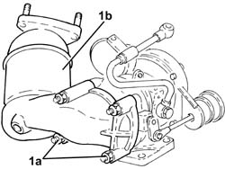
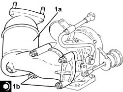

1080B40 CATALYTIC PRE-CONVERTER - R.R.
- Path
- Procedures > 10 ENGINE > 1080 EMISSION CONTROL SYSTEM > 1080B exhaust emission control system > 1080B40 CATALYTIC PRE-CONVERTER - R.R.
- Kind
- repair procedure (removal / refitting; the operation number is the code)
- Applies to
- engines: 1.9 JTD 8V; all production periods
- Interactive page
- https://sloeber94.github.io/elrnDB-fDbl/en/#/223000134
Applies to: engines: 1.9 JTD 8V; all production periods
 Removing
Removing
 Refitting
RefittingPosition the vehicle on a lift.
Proceed with the removal
1016A10 COPERCHIO INSONORIZZANTE - S.R..
Proceed with the removal
Op. 1072C44 EXHAUST MANIFOLD HEAT SHIELD R+R.
Proceed with the removal
Proceed with the removal
Op. 5530B52 BATTERY SUPPORT/DRIP TRAY - R.R..
Proceed with the removal
Op. 1048A10 AIR FILTER ASSEMBLY - R.R..
Proceed with the removal
Op. 7055B54 PROTECTION/GUARD UNDER ENGINE - R.R..
Proceed with the removal
1076B70 TUBAZIONE di scarico tra PRECATILIZZATORE e CATALIZZATORE - S.R..
Proceed with the removal
Op. 1048B14 AIR SUPPLY HOSE BETWEEN TURBOCHARGER AND HEAT EXCHANGER - REPLACE.
Proceed with the removal
Op. 1084B42 ENGINE OIL RETURN PIPE FROM TURBO - R + R.
Proceed with the removal
1064A19 GRUPPO TURBOCOMPRESSORE - COLLETTORE di SCARICO - MANICOTTO di UNIONE a TUBAZIONI SCARICO - S.R..
Place the turbocharger assembly in the vice.
1. Undo the nuts (1a) and remove the catalytic preconverter (1b).

Applies to: engines: 1.9 JTD 8V; all production periods
Refitting
Removing1. Place the catalytic conveter (1a) in its housing and fasten it tightening the nuts (1b) to the recommended torque.
Fastening | Component | dia | Value (daNm) | |
|---|---|---|---|---|
1b | Nut | CATALYTIC PRE-CONVERTER | M10 | (Turbocharger side) 2.0 - 3.0 |

Applies to: engines: 1.9 JTD 8V; all production periods
Proceed with the refitting
1064A19 GRUPPO TURBOCOMPRESSORE - COLLETTORE di SCARICO - MANICOTTO di UNIONE a TUBAZIONI SCARICO - S.R..
Proceed with the refitting
Op. 1084B42 ENGINE OIL RETURN PIPE FROM TURBO - R + R.
Proceed with the refitting
Op. 1048B14 AIR SUPPLY HOSE BETWEEN TURBOCHARGER AND HEAT EXCHANGER - REPLACE.
Proceed with the refitting
1076B70 TUBAZIONE di scarico tra PRECATILIZZATORE e CATALIZZATORE - S.R..
Proceed with the refitting
Op. 7055B54 PROTECTION/GUARD UNDER ENGINE - R.R..
Proceed with the refitting
Op. 1048A10 AIR FILTER ASSEMBLY - R.R..
Proceed with the refitting
Op. 5530B52 BATTERY SUPPORT/DRIP TRAY - R.R..
Proceed with the refitting
Proceed with the refitting
Op. 1072C44 EXHAUST MANIFOLD HEAT SHIELD R+R.
Proceed with the refitting
1016A10 COPERCHIO INSONORIZZANTE - S.R..
Remove the vehicle from the lift.
Applies to: engines: 1.9 JTD 8V; production: da 12/03; only with equipment: MY 2005
Removing
Refitting- Position the vehicle on the lift.
- Turn the ignition key to the OFF position.
- Disconnect the negative battery terminal.
Op. 5530B52 BATTERY SUPPORT/DRIP TRAY - R.R.
Op. 1016A10 SOUND-PROOFING COVER - R + R
Op. 1048A10 AIR FILTER ASSEMBLY - R.R.
Op. 1072C44 EXHAUST MANIFOLD HEAT SHIELD R+R
Op. 4450B12 FRONT WHEELS (TWO) - R.R.
Op. 7055B54 PROTECTION/GUARD UNDER ENGINE - R.R.
Op. 1048B14 AIR SUPPLY HOSE BETWEEN TURBOCHARGER AND HEAT EXCHANGER - REPLACE
Op. 1076B70 EXHAUST PIPE BETWEEN PRE-CATALYTIC CONVERTER AND CATALYTIC CONVERTER - R.R.
Op. 1064A19 TURBOCHARGER ASSEMBLY - EXHAUST MANIFOLD - HOSE CONNECTED TO EXHAUST PIPE - R.R.
- Place the turbocharger assembly in the vice.
1. Undo the nuts (1a) and remove the catalytic preconverter (1b) from the turbocharger assembly.
Applies to: engines: 1.9 JTD 8V; production: da 12/03; only with equipment: MY 2005
Refitting
Removing1. Place the catalytic conveter (1a) in its housing and fasten it tightening the nuts (1b) to the recommended torque.
Fastening | Component | dia | Value (daNm) | |
|---|---|---|---|---|
1b | Nut | CATALYTIC PRE-CONVERTER | M10 | (Turbocharger side) 2.0 - 3.0 |
Applies to: engines: 1.9 JTD 8V; production: da 12/03; only with equipment: MY 2005
Op. 1064A19 TURBOCHARGER ASSEMBLY - EXHAUST MANIFOLD - HOSE CONNECTED TO EXHAUST PIPE - R.R.
Op. 1048B14 AIR SUPPLY HOSE BETWEEN TURBOCHARGER AND HEAT EXCHANGER - REPLACE
Op. 7055B54 PROTECTION/GUARD UNDER ENGINE - R.R.
Op. 4450B12 FRONT WHEELS (TWO) - R.R.
Op. 1072C44 EXHAUST MANIFOLD HEAT SHIELD R+R
Op. 1048A10 AIR FILTER ASSEMBLY - R.R.
Op. 1016A10 SOUND-PROOFING COVER - R + R
Op. 5530B52 BATTERY SUPPORT/DRIP TRAY - R.R.
- Connect the negative battery terminal.
Remove the vehicle from the lift.
Topics linked from this page (11)
- 1048A10 air cleaner filtering element - replace
- 1048B14 air delivery pipe between turbo charger and heat exchanger - replace
- 1064A19 TURBOCHARGER - EXHAUST MANIFOLD - EXHAUST PIPE CONNECTING HOSE - R.R.
- 1072C44 exhaust manifold heat shield on bulkhead - r+r
- 1076B70 EXHAUST PIPE BETWEEN PRE-CATALYTIC CONVERTER AND CATALYTIC CONVERTER - R.R.
- 1084B42 engine oil return pipe from turbo - r + r
- 4450B12 front or rear wheels (two) - r+r
- 5530B10 battery - r+r
- 5530B52 Battery DRIP TRAY/SUPPORT - R.R.
- 7055B54 under-engine guard - r r
- A001 BATTERY